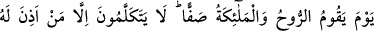
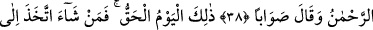
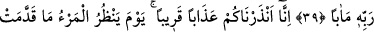
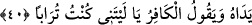

BİZ,
YAKIN BİR AZAP İLE
SİZİ UYARDIK
38. Ruh (Cebrail) ve melekler saf saf olup durduğu gün, Rahmân’ın izin
verdiklerinden başkaları konuşmazlar; konuşan da doğruyu söyler.
39. İşte o, kesin olarak gelecek gündür. O halde dileyen Rabbine varan bir yol
tutsun.
40. Biz, yakın bir azap ile sizi uyardık. O gün kişi önceden yaptıklarına bakacak
ve inkârcı kişi: «Keşke toprak olsaydım!» diyecektir.
“Ruh ve melekler saf saf olup durduğu gün…” Dikkat edileceği üzere tahsisten sonra
ta’mîm olsun diye önce ruh sonra melekler; Kadr sûresinde ise ta’mimden sonra tahsis
olsun diye önce melekler sonra ruh zikrediliyor. Zâhir olan şudur ki ruh şeklinde
zikredilen melek, meleklerin cinsindendir. Fakat ruh meleklerden yaratılış, rütbe ve
şeref itibariyle daha büyüktür. Çünkü ruh insan rûhunun mukabilindedir. Nitekim
melekler de rûhânî güçlerin mukabilindedir. Kuşku yok ki ruh, kendisine tâbi olan
güçlerinden çok daha büyüktür. Tıpkı herhangi bir dünya sultanının, emirlerinden,
askerlerinden ve yönettiği insanlardan daha büyük ve güçlü olması gibi.
Âyette yer alan “ruh” kelimesinin “bu Cebrail’dir” şeklinde tefsir edilmesi bizce zayıf
bir ihtimaldir. Her ne kadar bu ruhun “Ruhu’l-kudüs” ve “Ruhu’l-emin’” şeklindeki
tefsiri yaygın ise de bu zayıftır. Çünkü onun ruh oluşu zatı açısından değildir. Yoksa
meleklerin tümü her ne kadar latif cisimli varlıklar olsalar da rûhânî varlıklardır. Şu
halde Cibril’in ruh olması, ruh üflemesi ve canlılardaki ruh mesâbesinde olan vahyi
getirmesi açısındandır. Âlimler görüş birliği halinde İsrafil’in Cebrail’den ve başka
meleklerden daha büyük olduğunu söylüyorlar. Bu meleklerin içinde herhangi birini
birinci safa koymak gerekirse bu Cebrail değil İsrafil olurdu. Dolayısıyla yukardaki
âyette geçen “ruh” kelimesinden maksadın ne olduğunu -bu konudaki rivâyetler muhtelif
olsa da- ancak Allah Teâlâ bilir. Bu noktada Allah Teâlâ’nın yardımıyla bize gözüken
ve aklımıza gelen bundan ibarettir.
“Saffan” kelimesi haldir. Buna göre âyete mânâ vermek gerekirse şöyle denilebilir: